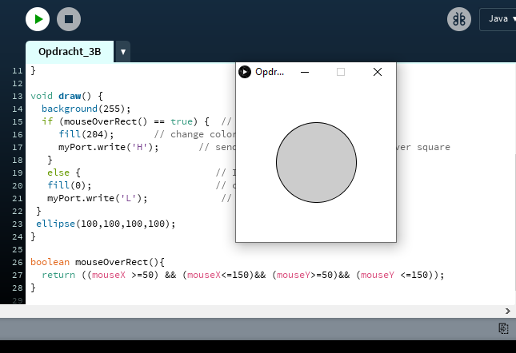
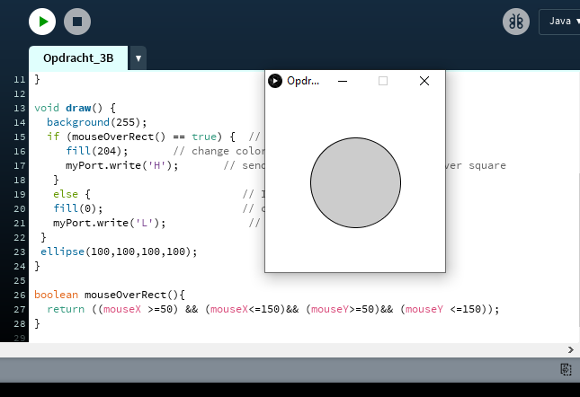
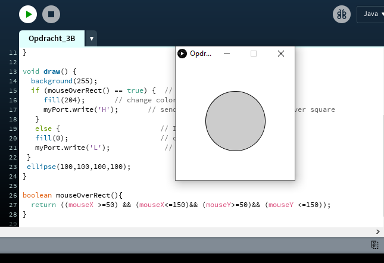

In this assignment, I had to learn the basics of the Unreal Engine, developed by Epic. We had to follow a small tutorial that guided us through different processes of modeling, texturing and animating virtual objects in a virtual environment.
After importing the prebuild mesh, a different word for model, I had to texture it first. First I had to add an material and select a picture to be used as an texture. After that I had to select the model of the banana again, to add the material I just created to be used as an texture. See the following figure
Last thing that needed to be done, was the animation. Luckily for me, this was very easy to do. I had to add a trigger and an event to make the banana rotate. In the figure on the right you can see a red box called 'Event Tick'. In unity time is displayed in ticks and this basically is Unity language for 'every second'. The blue box called 'AddLocalRotation' does exactly what it says it does. Adds a rotation to the object, I set the Z value to 1. This makes this model rotate 1 degree in the Z-axis. Link it up with the 'Event Tick' and voila!
End result
A-Frame
Here I used the A-Frame API to create different shapes. As you can see I've used an orange cylinder, a green circle, a red octahedron and a yellow box.
Here I used the animation property to give them a rotation. The box and the octahedron are rotating on the Y-axis. The green circle is rotating on the X-Axis. And the orange cylinder is rotating in both the X and Y axis.
The red circle represents the user focal point, this where he or she looks at. The moment it 'looks' at an object it can cause an event. The red box will turn red, the yellow box will turn and shrink after looking for 1 second.
Arduino
Exercise 3B
In the loop I declared in the code to turn on the green light first, then after half a second it will turn off the green light. And turn on the yellow light, wait half a second and turn it off and turn on the green light again. This will continue to happen till there is no more electricity running through the Arduino.
Exercise 4C
Instead of turning the lights on and off, I let them fade in and out. Yellow starts fully lit but starts to fade slowly, simultaneously the green light will increase in brightness. When the yellow light turns completely off, the loop reset again.
Exercise 6C
Now we use a knob, that we can turn. When completely turned to the left, the green light stays off and the yellow light on. When I turn the knob to the right, the yellow light will slowly fade off while the green light will slowly increase brightness.
Exercise 7A
This LED Matrix has a grid of LEDs of 9x9. Each LED can be turned on or off. By turning on a few specific LED locations, it will look a like a smiley! You can change this automatically, like in the GIF. First it will smile, a second later it will frown.
Exercise 8
The small sensor on the left, is a LDR sensor. It can sense the amount of light in the environment. I used this sensor to communicate a brightness to the two LEDs. The less bright light the sensor recieves, the lesser bright the LED's will be.
Exercise 9C
This small cylinder is actually a speaker. Unfortenately it can only send one tone. If you listen closely, it will make siren noise. I accomplished this by changing the hertz in a loop to go up and down, which make it sound like a siren.
Exercise 11C
The sensor on the left is called a Ultrasonic Sensor, it is used to measure distances. Since it can measure vibrations in the air and by doing some quick calculations, it can estimate the distance between itself and an object. Here I set up a LED and the sensor, when the box is closer than 10 cm, the LED will turn on.
Exercise 12D
In this GIF I hooked up my Arduino to another program called Processing. By recieving the data from the knob, I can manipulate the size of the circle on my monitor.
Exercise 13B
Here I hooked up a small button and a LED. When the button is pressed the LED is turned on.
Exercise 14B
This is called a servomotor, it can rotate very precisely. I've changed the code here to make it kind of dance.
CV
Exercise 2F:
Here I drew 5 circles in 5 different colors. Starting with red and ending with light blue. The reason why they are overlapping is because it draws the circles one by one, starting with red.
Exercise 2I:
You don't only have circles, you can draw, triangles, rectangles, lines and quadrahegon
Exercise 2O:
Here we make use of the location of the cursor, the orange ball is the mouse location. One end of the line is connected to floor and the other to the mouse. Then I added three more rectangles with the colors, red, white and blue. The width of these rectangles is determined by the X-axis value of the mouse.
Exercise 3B:
In the left the circle is black, but in the other its gray? This circle reacts to cursor, if its hovered by a cursor it will turn gray. It will also send a value to the Arduino. This can then be used as trigger to an event in the arduino.

Exercise 5C
In this preview, everytime when the mouse goes over the window it will print circles. When click the mousebutton, it will fill in random colors
Exercise 5E
Here I'm using face tracking to fill in a circle. Starts in red and when I turn my head, it will color them blue.


 
